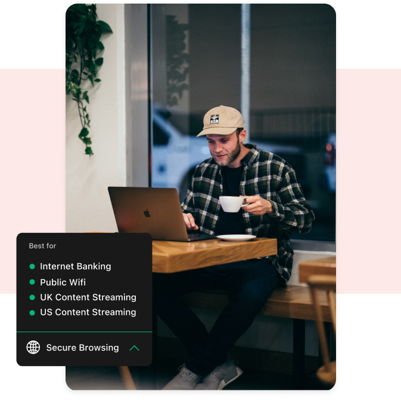
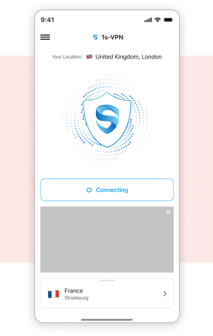

Зашифруйте свой просмотр в Интернете
VPN шифрует ваш просмотр и скрывает ваши действия в Интернете от других. Это
как носить плащ-невидимку онлайн!
Это защитит вашу личную информацию от хакеров и шпионов, которые могут попытаться шпионить за вами.

Дополнительная защита в общедоступном Wi-Fi
В общедоступных сетях Wi-Fi, например в кафе или аэропортах, другим легко увидеть, что
ты занимаешься онлайн. Но с VPN это
например, наличие секретного кода, который шифрует вашу деятельность в Интернете, затрудняя ее для других
понимать. Он держит
вашу личную информацию, такую как пароли и банковские реквизиты, в безопасности от посторонних глаз.
.png)
Доступ к веб-сайтам и контенту с географическим ограничением
Некоторый контент может быть ограничен в определенных странах. Использование VPN позволит
вам получить доступ к своим любимым веб-сайтам, где бы вы ни находились. Обходите блокировки правительства или работодателя и транслируйте контент, который обычно
недоступен в вашей стране.

Защита нескольких устройств в стандартной комплектации
Если у вас есть ноутбук, настольный компьютер, смартфон или планшет,
мы тебя прикроем. Безопасный просмотр (VPN)
доступны через все наши приложения, поэтому, какое бы устройство вы ни использовали, вы можете сохранить
соединение безопасное.
50+ сверхбыстрых серверов